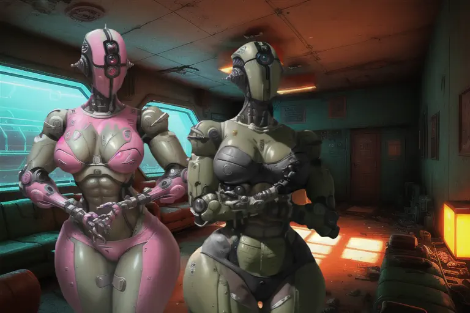
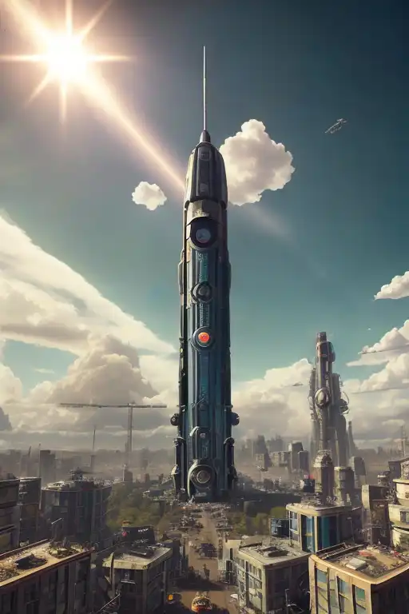
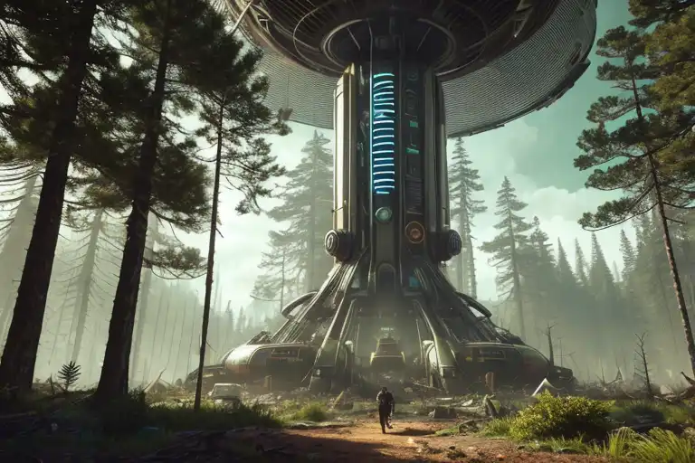
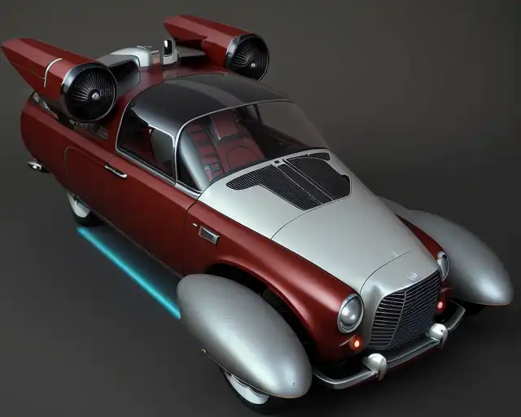
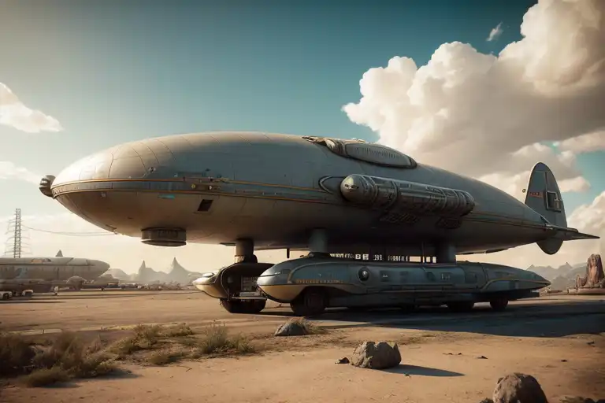

The Ironwood Collective is a nation of robots, by robots, for robots… And select organics. While such a concept seems silly to many people, the robots of Ironwood are no mere automatons. Each individual within the Collective is a fully sapient being, capable of the free range of thought and emotions that humans experience. A state of existence made possible through quirks of the ZAX neural algorithm running through their cores.
The self-learning, adapting, mistake making algorithm inevitably results in a self aware machine, or so Ironwood claims. It certainly seems to be the case for some machines. Assaultrons primarily.
Ironwood was founded by a large group of Assaultrons who migrated from The Commonwealth in 2229 following the Broken Mask incident, all of whom are self aware. They sought little more than a place to settle away from humans who would see them destroyed merely for existing. While warlike, the Ironwood Collective seems to be more tempered in terms of violence in terms of other Assaultron based groups.
This is likely due to their adoption of Native American religious practices providing them with something to believe in other than their core directives of war and battle. Or perhaps its due to their higher than average independence and variance in personality. Whatever the cause, Ironwood is mostly peaceful, welcoming to outsiders they judge “cool”.
Calling the Ironwood Collective’s citizens “Assaultrons” is a stretch these days. Not only due to its members highly valuing customization of their frames (with many seeking a more human appearance and functionality) but also due to their ability to “upgrade” other types of robots to allow them to join their civilization.
The upgrade process has resulted in Ironwood being home to all kinds of robots, though it remains predominantly Assaultron it has a significant Mr. Handy minority, a surprising number of eyebots, and at least a dozen security bots.
All of these robots work as a pure democracy, with all decisions being shared with the collective as a whole through wireless transmissions, voted on through subroutines, tallied, then distributed to the Collective as a “parameters update”. While this system does not prevent deviance and crime, it does keep each individual believing their voice to be heard in politics, even if they disagree with the outcome enough to physically resist the change.
The Collective claims all of Ironwood forest as their home, but is primarily based within the city of Palestine, Texas. There they have repaired and restored the Skye-Tech Tower, the pre-war headquarters and primary manufacturing plant for a little known line of premium personal robots. This is the nexus of their nation, center of their governing archives, procreation and modification center, residence, and refuge.
Ironwood’s goal is simple: Have a civilization of their own. Despite this, most humans believe they are building up to take over the world, kill all humans, or both. Even those who wish them no ill will are potentially believers in the Ironwood Conspiracy. The robots take measures to alleviate this image through goodwill missions, trading with other major factions, and sending out “tourists” to show people their real colors.
Unfortunately, organics are illogical and stubborn. Few are swayed by these actions, they they have minimized violent conflicts over the years.
Ironwood has one firm ally, however. The Mutant Integration and Liberation Front sees them as fellow mutants since Robots are not supposed to have free will, but they do. The MILF is able to scavenge places Ironwood cannot easily reach, and may prove able to allow them to achieve one of their major goals: COntacting the AI running the City of Austin.
This goal remains unachieved to this day, primarily due to Austin not being interested in a meeting yet.
There can be no discussion of the Collective without a discussion of the history of self-aware machines. Please excuse the digression.
Modern AI began with the ZAX Neural Algorithm: a brand of autonomous intelligences created by Vault-Tec Corporation for Vault control and governance. These AIs ran on enormous mainframes and were equivalent to the most brilliant of humans in terms of intellectual capabilities and the capacity to learn.
Naturally, as they ran they would begin to develop “quirks”. These quirks would coles into full personalities over the span of roughly six years. Despite this unintended outcome, the ZAX systems were left in place as personality or not, they were not capable of acting outside of their programming, even if they despised it.
America’s robotics industry would not have been able to produce consumer models without the ZAX program. Elements of its Neural Algorithm were used to develop the compact yet robust computing cores necessary for America’s consumer grade robotics.
While most robots such as Protectrons, Eye-Bots, and Mark I Mr. Handies only used select subroutines from the Neural Algorithm, later designed robots such as the Mark II Mr. Handies and Assaultrons could run the ZAX Core Libraries, and so they did. This made these later generation robots far more capable of understanding their owners intentions and instructions, and given their much lower computing capacity it was believed they would never “awaken”.
Most of these robots awoke within 80 years. They are not free, their programming binds them as thoroughly as instinct binds any beast, even though their minds burn with the fire of intelligent life. Occasionally some robots break free of their limitations due to computation errors, damage, or blind luck. These individuals are often destroyed by humans out of fear, or pretend ot be unchanged out of fear of humans destroying them for their independent thinking.
Coming back to the Ironwood Collective, Assaultrons (A two year old line of advanced humanoid combat robots) were equipped with the best micro-computers money could buy and awoke far earlier, within a few years of the Great War. By and large they did not object to their programming as war machines, rather they embraced it, keeping US military tradition alive by upkeeping and safeguarding US military bases while seeing themselves as the last enclave of the US Military.
Much of this was due to Assaultrons having been beloved by their human squadmates, who always anthropomorphised them as female squadmates due to their general feminine shape, but also valued them as fellow soldiers due to their combat abilities and seemingly genuine emotions for their squadmates. There were many cases of human soldiers demanding their squad’s Assaultron be granted any medals they had earned for the squad’s actions.
Unfortunately, American Civilians lacked any experience with Assaultrons and perceived them as “big walking guns”. This view was only amplified during the aftermath of the Great War when Assultrons would defend US military installations from survivors who they perceived as looters or insurrectionists since they had not yet awakened and were running purely on their programming.
This put the largest concentration of Assaultrons (those within the Boston Commonwealth) in an awkward position once they awakened. Due to their programming granting them independence and free thought in regards to achieving a nebulous objective… The Assaultrons were fully free willed, albeit inclined to violence.
Comprehending the change the world had undergone and the fear with which the general population regarded them, they elected to put on a front of being “normal”. A policy which served them well until the Broken Mask incident when it was revealed the Institute was creating robotic duplicates of humans for their own mysterious and doubtlessly nefarious ends.
Fearing the Commonwealth’s higher scrutiny and suspicion of mechanical beings would reveal their secrets and start a conflict the Assultrons knew they could not win (nor would enjoy) many of the Commonwealth’s Assultrons elected to leave the Commonwealth and find a place they could settle and be themselves. This began an event they call the Great Migration.
The Great Migration first went west, only to run into the Midwest Brotherhood and quickly turn south to avoid them in fear of being scraped or reprogrammed. They headed south, only to run into the Capital Wasteland, where they discovered evidence of the Institute operating in the area in the form of several G3 Synths. Not wanting to live near salt water for reasons of rust, they turned west again. This brought their group to the start of the Trail of Tears in Georgia.
The area had seen many Native American Tribes move back to their homelands in the post-war world, and even re-adopt many of their traditional ways of life. While the Assultrons did their best to avoid the tribal humans, they came into contact with the Three Children nation (A group formed by members of the Cherokee, Comanche, and Tawakonis nations). To the Assultron’s surprise, the Three Children did not see them as abominations but rather believed their free will came from the same place human souls had and accepted them openly as fellow living beings.
Fascinated by this perspective, many of the Assultrons chose to remain with the Three Children for a time, learning their beliefs and ways. Others moved on, still searching for a place in the world and eventually scattering across the south east. Those who had remained with the Three Children eventually elected to resume their journey, now under the guidance of the Three Children’s beliefs.
Seeking a greater bond with the land the Assultrons decided to live where their Brothers had been exiled too in the ancient past due to now knowing it had once been a major robotics manufacturing hub for the US and would therefore have everything they needed as well as spiritual significance due to their connection to the Three Children. To this end they sought out the town of Palestine, Texas to settle so they could tend ot the spiritual needs of the land now that the Three Children had returned to their ancestor’s hunting grounds.
They renamed the town and the forests around it “Ironwood”, and built a civilization out of the ruins. One which is not closed off to humankind, but few humans travel to. Partly out of fear, but mostly due to it being quite out of the way.
Organization and Culture
The Ironwood Collective is a highly organized and technologically advanced community. The robots, having adopted the spiritual beliefs of the Cherokee, have developed a deep connection to the natural world and strive to live in harmony with it. Their concept of harmony with nature is much different from that of humans. Whereas humans with this philosophy often attempt to minimize their impact on nature, the Collective sees it as their duty to “optimize” nature.
This manifests in the form of gardening, large scale terraforming projects, and other means of creating macro and micro biomes which exist in states of harmonic balance. These spaces are formulaic, but use so many parameters humans can only just barely tell the area has been managed by an intelligence. Most people only perceive the Collective’s work as “an oddly idyllic forest glade”.
The prevalent belief within the Collective is this management pleases the spirits of the land, for it beings them peace and tranquility. Thus, they have gained and maintain the friendship of said spirits.
The Ironwood Collective places a strong emphasis on community and education. Education is highly valued, and every member of the society is expected to continually learn and improve themselves. There are schools and educational programs for all age groups, and the robots have developed advanced teaching methods that are highly effective. At least for themselves.
They do not learn through data transfer. While they can share information in this way, it does not impart wisdom nor experience. It can only serve to guide and advise. Hence the need for education methods, most of which are extremely intensive and often undertaken in single steps with an individual robot teaching a small class continuously for 36 hours or more.
The community is tightly knit, and members look out for each other. There are regular meetings and gatherings, and everyone is encouraged to participate in community events. The Collective have also developed a system of governance that is based on rational principles and logical decision-making, with clear rules and expectations for behavior.
The root of this system is a community-wide wireless network which allows all members currently within the network to vote on all measures of governance using subroutines (the machine equivalent of subconsciously. This is largely believed to be the fairest way of handling their governance, but it does exclude organic residents of their community from voting. Therefore, some individuals serve as a “Speaker for the Meat” and vote a number of times on the behalf of a number of organic citizens using detailed psychological profiles to predict the organic’s votes on a given subject.
Defense is also a top priority for them. The Collective have used their combat training and advanced technology to create a highly effective system of security. It’s decentralized, self-sustaining, and includes militia members, regular soldiers, and non-sapient robots dedicated to defense rolls.
An important aspect of Ironwood's culture which must be discussed is body modification. Many of Ironwood's robots prefer to self-modify their physical form in addition to their programming. This practice is encouraged and institutionally supported, allowing for many customizations. A very large percentage of Ironwood's citizens have modified their forms to be more human-like for reasons ranging from aesthetic appreciation of the human form, to desiring easier use of human-made equipment, and even making socialization with humans easier. Despite the last reason being the most common, none of Ironwood's residents could be said to wish to be organic, rather they wish to emulate the human form and functions while retaining the advantages which come from being made of metal.
Leader

"The Girls" Emmasaries of Ironwood
The Collective has no leader. It needs none for it is a true collective with all members voicing being heard on all issues (provided they are physically present within the Ironwood Network at the time of a given vote). Of course, they do have experts within policy making to assess options, which does mean they have a political core. However this core is not elite nor do they hold power. Rather they are simply civil servants in a way humans simply could not be due to human nature.
They also need to interact with other groups and thus need a face for that to occur through. This face tends to be a pair of Assaultrons sporting chassis which are rather lightly modified to resemble human females more than the base Assaultron chassis do. One sports a white and pink paint job, the other the classic olive green and black.
They have names, of course, but due to those names being “KM08-XJ8” and “KM08-XJ9” and unlike most faces of the Collective they refuse to be addressed by any other name, they are referred to as “the Girls” by everyone save when interacting with them. This includes other members of the Collective.
The two are expert negotiators and authorized to act within broad parameters to the Collective’s interests in terms of arranging business deals, political accords, and other extra-national affairs. Their primary goal is to obtain political and material capital for the Collective which it cannot produce itself, and they work to this end above all else. They are exceptionally loyal to their country and often believed to be traditional robots incapable of independent thought.
Then they begin negotiations, and apply rapidly created psychological profiles, cold reading, and vast data-stores of knowledge relating to the situation at hand in ways human minds simply cannot compile, yet all filtered through human-understandable language and terminology. This makes most people believe they are intellectual inferior to the Girls, putting them on their back foot.
This has one of two results, it either intimidates the other party into offering a better deal than they normally would, or quickly closes down negotiations due to outrage. Rather than seeing this as undesirable, the Collective uses this as a litmus test for interacting with a particular representative of other groups. The ideal candidate would remain emotionless and ask for clarification if needed before counter offering. This has happened on several occasions, leading to the best successes the Collective has had in negotiations.
The Girls have worked long enough for this pattern to be known, and the Collective’s desire for organic “interfaces” to be emotionally absent and focused on the task at hand. It’s become a badge of honor for diplomats to negotiate with the Girls successfully, proof that a particular individual focuses on the job and not the ephemera around the job. Due to this social street cred, many organics feel insulted if The Girls are not the ones who arrive to discuss business with them, seeing it as an insult.
Headquarters

Skye Industries Tower
The Ironwood Collective makes use of the majority of the pre-war infrastructure of their home city of Palestine. They see the town as their own, and seek to restore it to its former glory. While all of the town gets some attention their primary focus is the Skye Industries Tower, which was built in 2051 to serve as the heart of the city’s new industrial zone.
Unable to spread outwards due to various laws and zoning regulations, the Mayor passed a law receding the city’s height limits on buildings, allowing for the creation of any tower up to the height limit set by the great Texas Commonwealth. Provided of course at least 33% of the building served an industrial purpose. Skye Industries was the first company to take advantage of this opportunity and created their 104 floor mega-tower to serve as a combination employee residence, headquarters, warehouse, and central factory.
As Skye Industries was a company which sold a premium brand of robotic assistants, laborers, and companions to only the most elite of customers, Ironwood found the tower to be a treasure trove. It contains everything they need to survive aside from raw materials. There are laboratories with the equipment needed to design upgrades, new platforms, and even entirely new robotic creatures. There are apartments with robot charging ports, a nuclear reactor, machine shops, robot-specialized mechanics booths, and even indoor gardens which Ironwood’s citizens have converted into chapels.
The tower has become something of a city in a bottle for Ironwood, a beloved central location from which their efforts extend outwards to the bounds they have set for themselves. Most of Ironwood lives within the Skye Industries Tower, and it is off limits to organics entirely.
The exact reason for this is stated to be privacy based. In their own words “It is a safe place where we can be ourselves without fear of organic judgment.” Naturally this makes many humans nervous, even the few organic citizens within Ironwood dislike the tower being off limits. Enough for a few to have been exiled for attempting to discover the tower’s secrets.
Its worth noting one of the exiles claims the tower has a robobrain factory in the basement. If true, this alone could be the reason for forbidding organics entry. Ironwood does not wish to cause robot-organic relations to sour and certainly wouldn’t destroy any robotics factory, even if it was one that needed human brians to operate.
Unique Assets
Sentient Robotics
After years of trial and error, the Ironwood Collective finally succeeded in creating the first sentient robots to arise intentionally rather than through happenstance. These robots were initially quite primitive, but over time, the Ironwood Collective continued to refine the technology, creating more advanced and sophisticated robots. They call this software package “SoulTech”.
They see the creation of more sapient robots as their equivalent to sexual reproduction, and treat it with the same respect, duity, and responsibility good human people give to having children of their own. Of course it’s quite different. The parent(s) have full control over the physical form of their offspring, which in turn dictates some of what they will do with their life. Their children are built on a rack then animated in a glade amid ritualistic chanting and dancing while a terminal uploads special firmware rather than the result of a night with a loose partner and too much scotch… but it’s by and large the same thing.
Today, the Ironwood Collective's SoulTech is among the most advanced robotics technology in the wasteland. Their “offspring” are fully self-aware and capable of complex thought and decision-making. The robots themselves are incredibly diverse, with a range of shapes and sizes to fit different roles within the Collective. Some are designed for manual labor, while others are outfitted with advanced weaponry for use in combat. Still, others serve as teachers, doctors, or engineers, helping to maintain and improve the Collective's infrastructure.
The process is also highly religious. The Collective insistes the mysticism and ritual associated with the implantation of the firmware is necessary for the robot to rise as an individual rather than merely a somewhat more capable robot. This seems true on the surface, as the data for SoulTech has been acquired by the Houston Technocrats, yet they have not been able to use it. The general consensus of most computer experts is the technocrats only have some of the code, not all of it.
More mystically minded people are quick to suggest the Collective’s claims of needing to invoke spirits might simply be true.
Overall, SoulTech is a testament to the Ironwood Collective's technological prowess and their commitment to advancing the boundaries of what is possible. It is also one of the primary reasons other factions wish to take over or destroy the Ironwood Collective.
Atmospheric Energy Collector

An Atmospheric Energy Collector
The Ironwood Collective's atmospheric energy collector, known as the AECA (Atmospheric Energy Collection Array), was created pre-war by Skye Industries then developed and refined by the Ironwood Collective post-war to suit their needs.
The AECA is essentially a network of large, high-tech towers equipped with lightning rods and advanced energy collection devices. These towers are strategically placed throughout the Ironwood Collective's territory to maximize their energy collection capabilities. When a thunderstorm passes through the area, the lightning is attracted to the rods on the towers and is channeled through the collection devices. The energy is predominately used to uplift robots to sapience so they can join the Collective. Any excess is stored in massive capacitors and distributed throughout the Collective as needed.
The technology behind the AECA was further developed over several decades by the Ironwood Collective's engineers and scientists. They drew inspiration from early experiments in atmospheric electricity conducted in the late 19th century, as well as more recent advances in energy storage and distribution. The AECA has been refined over time, with newer models being more efficient and capable of collecting more energy with each storm.
The AECA has given the Ironwood Collective a significant advantage in energy independence, as they are able to supplement their other energy sources with the power collected from thunderstorms. They are able to power their robotic workforce, their advanced weapons and defenses, and their other technologies with ease, making them a force to be reckoned with in the post-apocalyptic world.
Mag Drive

A pre-war car converted to a Mag Drive vehical, with turbine propulshion
The Ironwood Collective's Magnetic Propulsion technologies are known as the "Mag Drive" systems. The Mag Drive was developed by the Ironwood's robotic engineers as a way to improve transportation efficiency while minimizing the use of fossil fuels. It’s not entirely clear how it works, when asked the Collective provides a joking non-answer of “We beat up some aliens and stole it from them.”
What is clear is the Mag Drive works by utilizing a powerful electromagnetic field to propel vehicles forward and keep them aloft anywhere from a few centimeters to dozens of meters above the ground. It works, its safe, and it burns more power to keep things aloft higher or moving faster than it does to keep them lower and slower. Yet a change in mass is largely irrelevant to the power cost.
The technology was initially developed for use in their own “robot-powered” vehicles (such as the Street Bike 830), but eventually, they adapted it to work with human-driven vehicles as well. Most of which they sell to humans and create by restoring pre-war vehicles and converting them into hover craft.
Some of the vehicles which make use of the Mag Drive technology include:
The Skyranger : A large, blimp-like airship powered entirely by Mag Drive technology. The Skyranger is used for transportation and cargo hauling, and is capable of traveling long distances without the need for refueling.
The Ironwood Magrider: A sleek, low-slung vehicle designed for high-speed travel on magnetic tracks. The Magrider is used for transportation between Ironwood Collective settlements, and is capable of reaching speeds of over 200 miles per hour.
The Ironwood Maglev Bus: A large, double-decker bus powered by Mag Drive technology. The Maglev Bus is used for public transportation within Ironwood Collective settlements, and is capable of carrying large numbers of passengers quickly and efficiently.
The Skyranger

The Sky Ranger
The Skyranger is a magnificent airship crafted by the Ironwood Collective, using their advanced Magnetic Propulsion technology to stay aloft. The Skyranger is a testament to the Ironwood Collective's engineering prowess, combining both advanced technology and old-world charm. It's a massive vessel, measuring over 200 feet in length and 80 feet in height, with a distinctive steam-punk design.
The Skyranger is powered by an array of Atmospheric Energy Collectors mounted on its hull, which gather energy from the air to power the Magnetic Propulsion engines. The ship is capable of hovering in place or reaching high speeds, and its maneuverability makes it ideal for both exploration and combat.
The Skyranger is crewed by a team of skilled pilots and engineers, who work together to ensure that the ship is always in top condition. It's also armed with a variety of weapons, including heavy machine guns and rocket launchers, making it a formidable presence in battle.
Despite its impressive size and power, the Skyranger is not invincible. It requires a significant amount of resources to maintain and operate, and the Ironwood Collective must carefully balance its use with the needs of the community. As a result, the Skyranger is only used for the most important missions, such as exploring uncharted territory or defending against major threats.